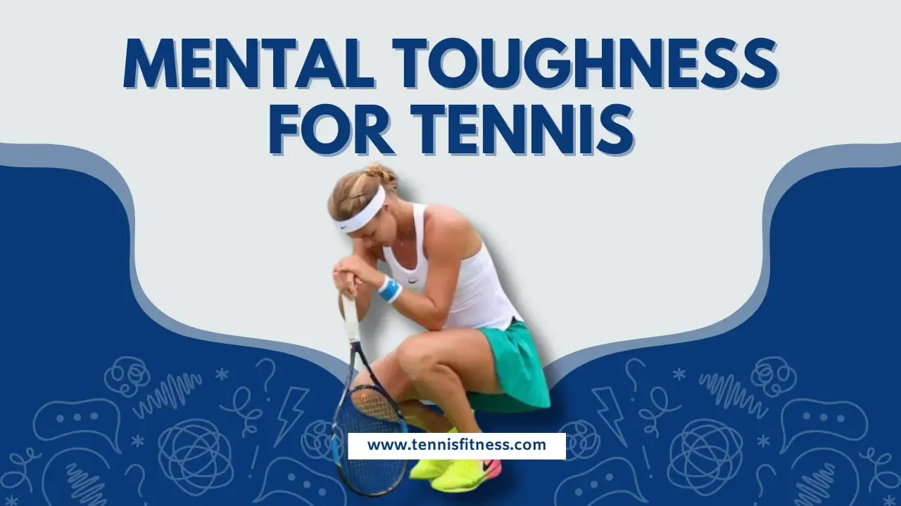
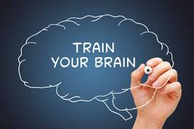
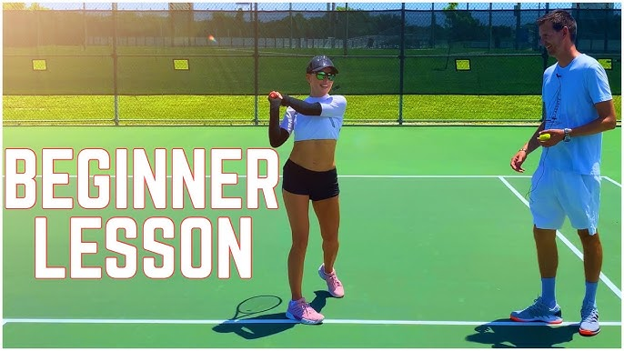
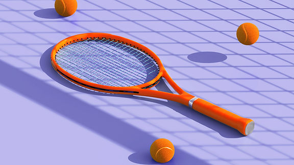

SERVICES
SERVICES FOR TENNIS
Mind Matters Sports (MST)

which offers mental training for tennis players, specifically focusing on developing mental game skills;
MultiSport Terrain (MST), a place that offers tennis and padel training; or MSTCONNECT PH, which offers tennis courses.
Mind Matters Sports (MST):

This organization focuses on the mental aspects of tennis, providing training to improve focus,
confidence, and other mental skills crucial for performance.
Trained via playing with experts or machine or even against self
MultiSport Terrain (MST):

This is a venue that offers tennis and padel training, welcoming players of all levels.
Testing beginners resilience and skill. offers tennis courts for players of all levels,
from beginners to advanced, and includes options for both casual games and professional training.
They also provide padel courts and pool facilities, making it a multi-sport destination.
MSTCONNECT PH:

Mind Matters Sports' tennis mental training program, not a tennis organization or competition. MST Connect, a division of Mind Matters Sports,
focuses on helping tennis players develop the mental skills necessary for peak performance.
Their program is led by Mark J. Springett, who has experience working with players at various levels, including ATP Tour players, college athletes, and junior players.
HOME